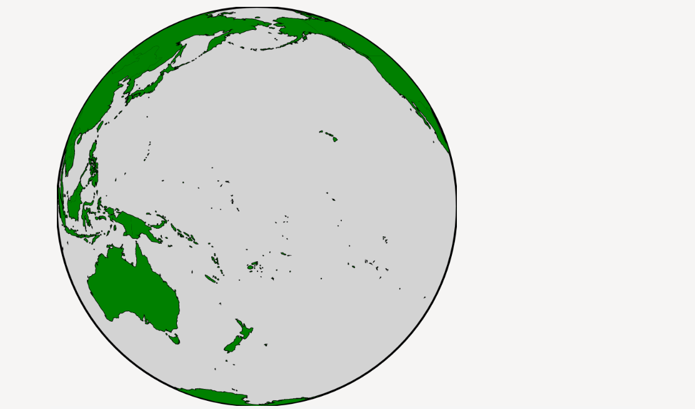

My idea was to expand upon the globe by coloring the countries based on the data from the worldbank economics. I was going to find the largest value in the csv and change the opacity of the other countries based on what percent of that max value they were. Countries without information would be yellow. Changedata would move to another column depending if you wanted to see average gdp or whatever. If you clicked a country information would pop up below in a div. I chose to do this so you could see the actual values corresponding to the color. The globe spins and i colored it but it just has one color. The country information is hardcoded and not dynamic I just picked canada to test it. I spent alot of time getting the csv formatted, since it was so large it took really long to make changes. The country names were not consistent between the different csvs and json so It took awhile to handle the discrepancies. I also removed alot of columns to make the project a little simpler. It took several days, about 18 hours I would say. Alot of this time was spent familiarizing my self with observable and different visualization tools.
